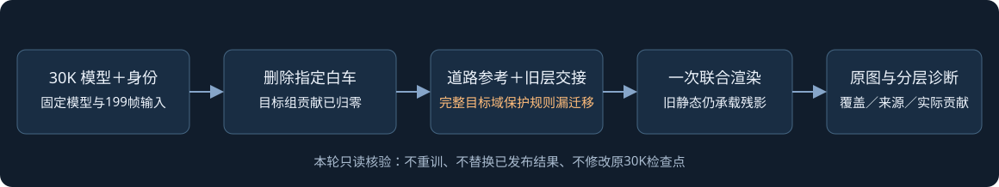
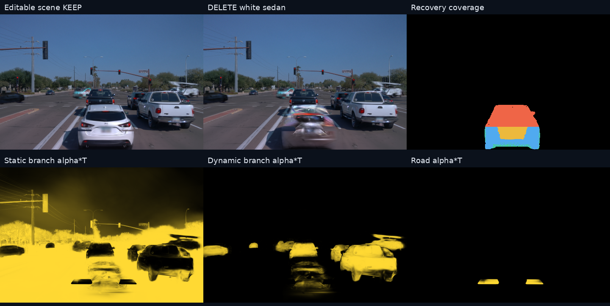
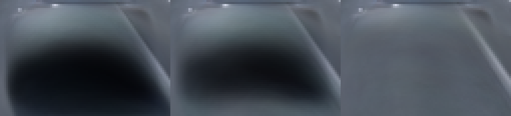
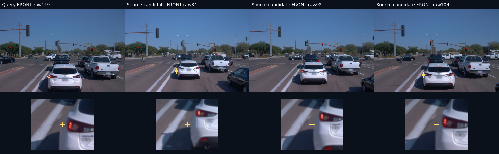
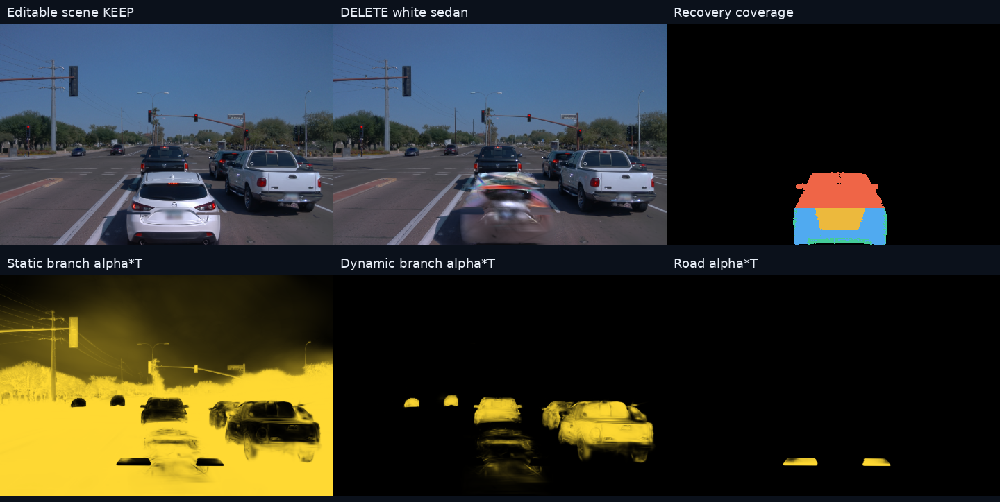
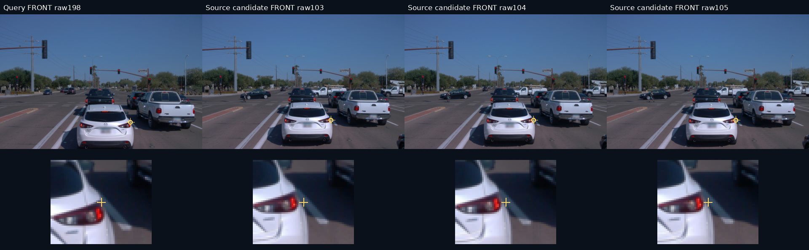

scene-065 · 前方白色轿车 · 30K固定场景 · 2026-11-09
编辑代码是当前共享版本；008 的保护规则没有完整迁移
已确认代码级遗漏：道路参考以外的目标车轮廓仍受“保留原删除画面”的损失约束。实际渲染中，非目标静态分支是残影的主要载体。道路可观测性也不足，修复保护规则后的效果仍须GPU对照验证。

先看实际画面和对应贡献

FRONT，第119帧。上排：同一编辑场景保留、删除、恢复覆盖；下排：保存的同一次联合深度排序中的静态、动态、道路 alpha×T。热图亮度固定为0–1，不是独立渲染某一层。
■ 道路图表范围外■ 范围内无可用道路参考■ 邻域推断道路■ 现有规则接受的跨帧道路参考
目标车组已经退出。第119帧原白车输入掩码域内，非目标静态分支平均贡献为83.42%，其他动态为10.61%，道路仅5.93%。其他动态可能包含合法的前车显露，不能据此删除邻车。静态未知归属也不能直接改成“属于白车”。
与008修复的具体差别

008历史实图，第113帧同一局部，从左至右为原删除、上一版和R3。配合源代码核对使用，不将008局部改善外推为065已修复。| 规则 | 008已采用的实现 | 065本次实际实现 |
|---|
| 原画面保持约束 | 完整目标轮廓关闭保持权重，即使该处暂时没有道路参考。 | 仅在已有道路参考的恢复域关闭；其余目标像素仍被要求接近原删除画面。 |
| 额外道路保持损失 | 限定在保留侧道路，排除车辆和目标域。 | 使用“道路图表范围外且非其他车辆”；再次包含了目标轮廓的范围外部分。 |
| 道路范围与显露 | 拟合入口合并道路范围、目标车身投影和残留见证，并保护其他车辆。 | 当前自动图表由目标轨迹地面足迹外扩构造；部分上方车身射线落到图表以外。 |
第119帧：11,624个目标像素中，4,472进入恢复，7,152仍有原画面保持权重。其中5,296在图表外，同时进入额外保持损失。第198帧同类情况为7,360／12,265。此处的“原画面”指未加入道路和交接的语义删除结果，它本身已有残影。
分母是已有训练实例掩码的像素，不是独立身份真值。图表覆盖也不证明白车后方全部应为道路。全199帧统计见 逐帧表。
仅扩大道路范围还不够
用原有语义、测距、遮挡和颜色一致性规则，重新搜索图表外的对应道路点：第119帧5,296个范围外像素中，31个有至少一次候选来源，只有9个满足三次颜色一致；第198帧为30／5,373和10／5,373。这是局部平面与投影近似下的候选审计，不是显露真值。

第119帧候选(187,260)及跨时刻候选。抽查点贴近尾灯、轮廓和阴影边缘，不能作为整块车身后的干净道路证据。其他时刻照片不是删除后的逐像素真值。
第198帧原始证据


第198帧候选(309,256)同样贴近车体边缘。当前局部平面假设下大量射线没有合法来源，不外推为完整视频或所有表面永远不可恢复。版本核对与下一步验证
运行记录确认为 v44_cli → v44_factory → V44Scene，使用065原生30K模型重新计算归属和1000步交接。最新归属修复提交为 c26d8cd5；本轮仓库HEAD为 b49882f0。实际公共包与仓库逐文件比较：41个文件一致，活动编辑模块全部一致。差异为包导出、历史008入口的注释和测试文件存放位置，不改变本次执行。未发现误用旧V43实例删除入口或旧10K行号。
这说明“代码文件是新的”，不说明“008完整恢复策略已迁移”。本次未加载008的私有表面、世界色场或其场景资产；也不应直接移植这些资产到065。
下一项最小验证是固定同一30K场景和输入，先做同排序RGB贡献与道路／交接开关的只读对照，再验证完整目标域的保持规则修正。道路真实参考、推断和未知区域分别记录；未知区域不能统一压成透明。未编辑车辆和已接受原生重建必须独立保持对照。
远端当前无NVIDIA设备，CUDA不可用。本轮训练更新0，未修改原生模型、正式编辑代码、已发布结果或scene-029。GPU脚本仅已准备并通过语法检查，未执行，未生成GPU结论。已直接查看119、198帧原图、贡献热图和来源实拍。alpha×T可定位可见性载体，不能单独证明RGB成因或量化保留规则修正的收益。
数据与可复跑脚本
代码核对 · 已保存联合贡献统计 · 跨时刻候选 · 完整覆盖统计
远端独立诊断目录：campaign/waymo_val065_delete30k_diagnosis_20261109_r1。脚本和运行边界见同目录README；失败账本沿用V82-F06。